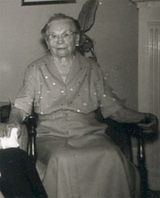

 . |
Dorthea Reismann Dorthea Reismannwas born in Oberjossa, Hessen, Germany on November 2, 1873. |
|
|
Important Facts
|
||
| November 2, 1873 | Dorthea Reismann was born in Oberjossa, Hessen, Germany. She is the daughter of George Reismann and Ana Katharina Vetter. |
| Met Lorenz Louis Stein | |
| February 14, 1895 | She married Lorenz Louis Stein in Berkeley, California. |
| 1895 | Jack Lorenz Stein II was born. |
| November 3, 1898 | Louise Dorothea Stein was born. |
| 1901 | Paul W. Stein was born. |
| August 21, 1902 | Louis Lorenz Stein Jr. was born in Berkeley, California. He died in 1996. |
| March 12, 1907 | >Martha Ann Stein was born. |
| 1910 | Albert Herman Stein was born. |
| February 26, 1968 | Mrs. Stein died in Berkeley, California. |

Last update: March 4, 2026